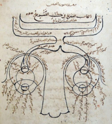
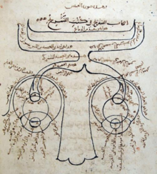

Ibn al-Haytham

Présentation
| Nom | Ibn al-Haytham |
|---|---|
| Nom complet | Abu Ali al-Hasan ibn al-Hasan ibn al-Haytham |
| Année de naissance | vers 965 |
| Lieu de naissance | Basra (Irak) |
| Décès | vers 1040 |
| Innovation célèbre | Théorie de l'optique |
Biographie
Dans sa tendre jeunesse, Ibn al-Haytham bénéficia d’une éducation complète et approfondie. Il étudia la philosophie, la théologie, les mathématiques et la physique. Ses travaux furent influencés par les œuvres de célèbres savants grecs et arabes, enrichissant sa vision scientifique.
Optique révolutionnaire
Pendant sa détention, il rédigea plusieurs ouvrages révolutionnaires. Il développa des théories sur la lumière, les couleurs, et la vision binoculaire, posant les bases des sciences modernes.
Ouvrages principaux
- Kitab al-Manazir (Traité d'optique)
- Fi al-Daw' (Discours sur la lumière)
- Fi Kayfiyat al-Zillāl (La formation des ombres)
Le traité d'optique
 

Pour en savoir plus : Découvrez le traité d'optique.